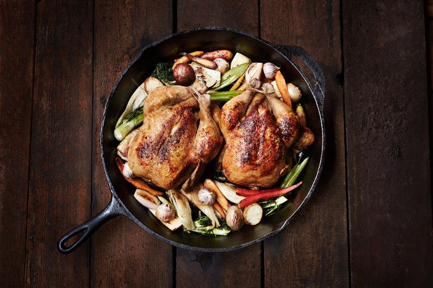
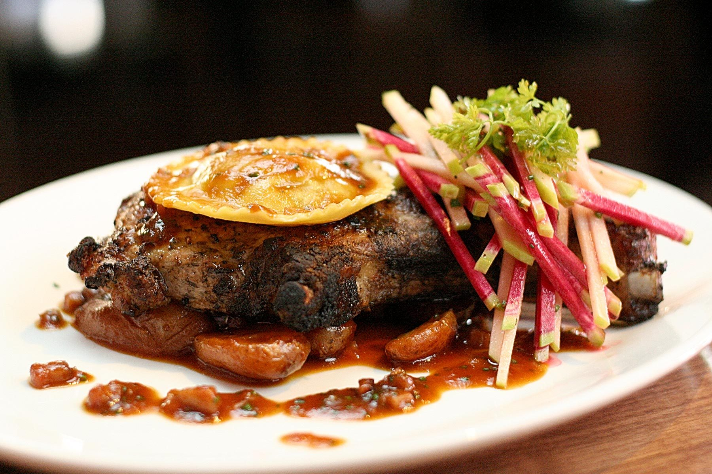
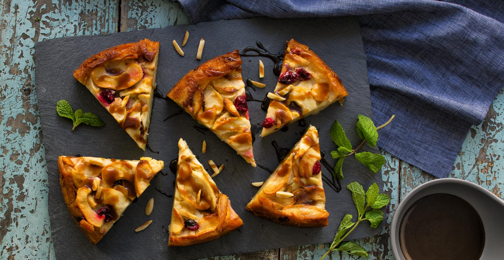

My Recipes
Cornish Hen
Cook Time: 45 minutes
Prep Time: 30 Minutes
"Crusty garlic bread and a nice light Chianti wine complement this meal very well."
Steak and Vegtables
Cook Time: 45 minutes
Prep Time: 30 Minutes
"Skirt steak is well-marbled and should be cook medium rare; any more, it will toughen."

Ingredients
- 2 prepared pie crusts
- 4 cups peeled and sliced apples
- 2 cups cranberries
- 3/4 cup white sugar
- 1 tablespoon cornstarch
- 1 teaspoon ground cinnamon
- 2 tablespoons butter, cut into small pieces
Mom's Cranberry Apple Pie
Prep Time: 20 minutes
Cook Time: 45 Minutes
Directions
- Preheat oven to 400 degrees F (200 degrees C).
- Fit a pie crust into a 9-inch pie dish and arrange sliced apples into crust. Spread cranberries over apples. Whisk sugar, cornstarch, and cinnamon in a small bowl and sprinkle mixture over cranberries. Distribute butter pieces over pie filling. Place remaining crust over filling, crimp both crusts together, and cut several slits into top crust to vent steam.
- Bake until pie is browned and fruit filling is bubbling, 45 minutes to 1 hour.
- Let est for 30 minutes before serving.